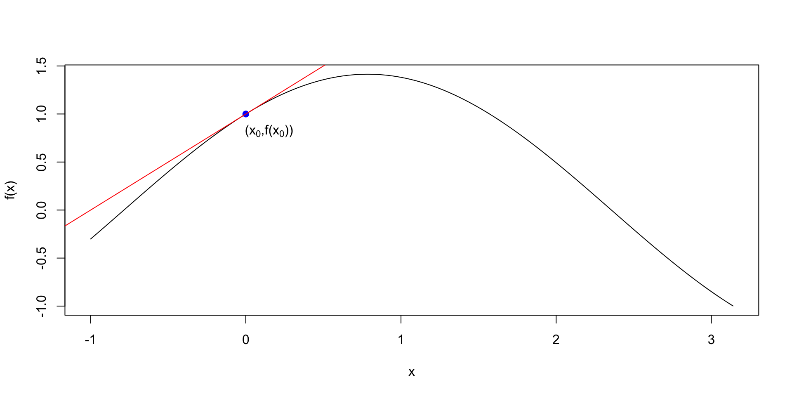
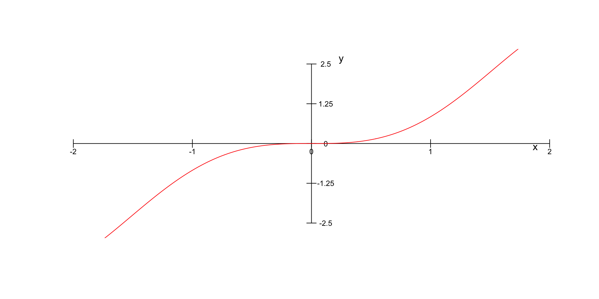
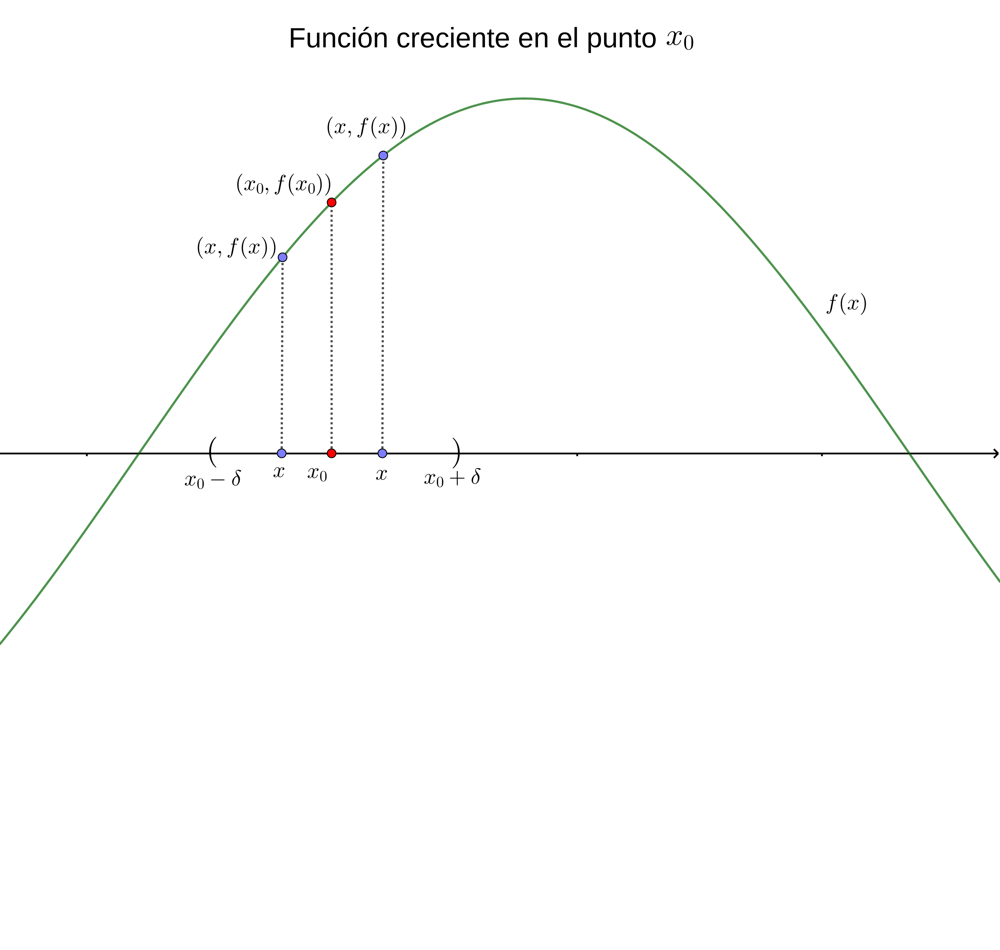
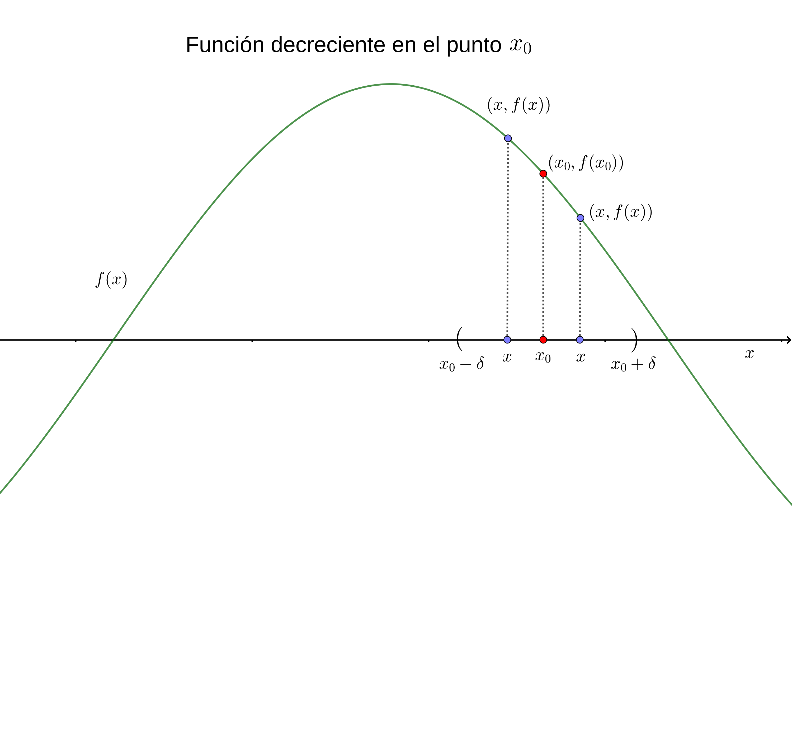
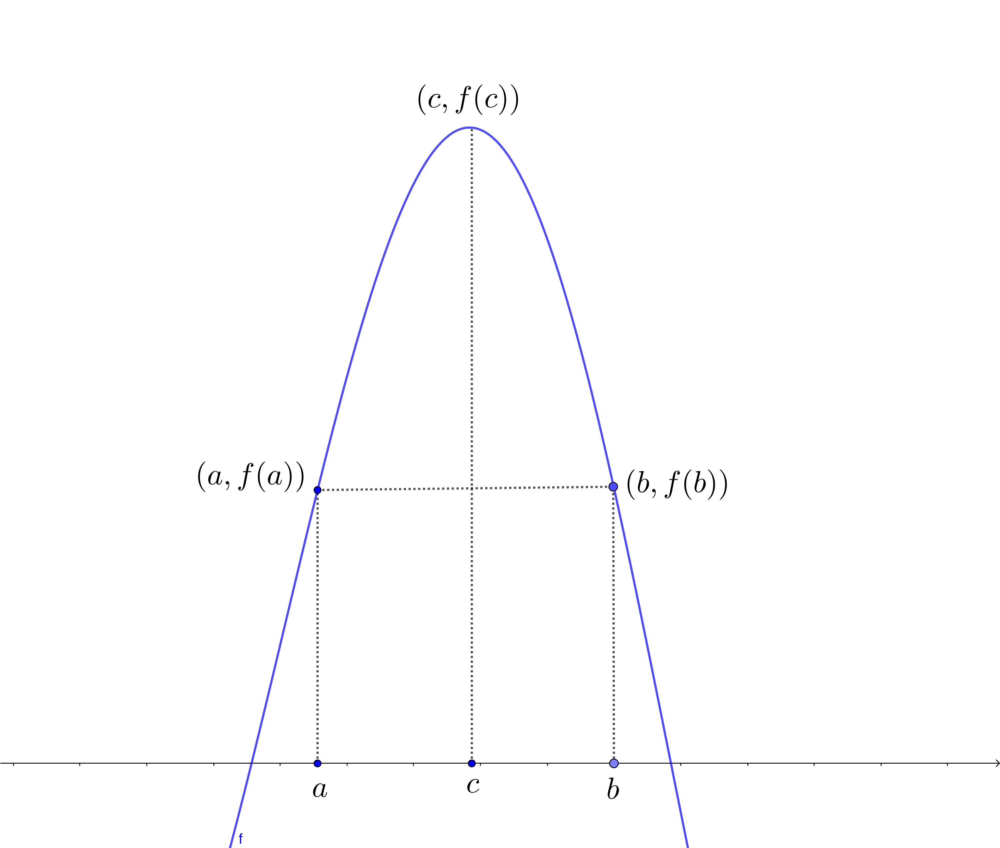
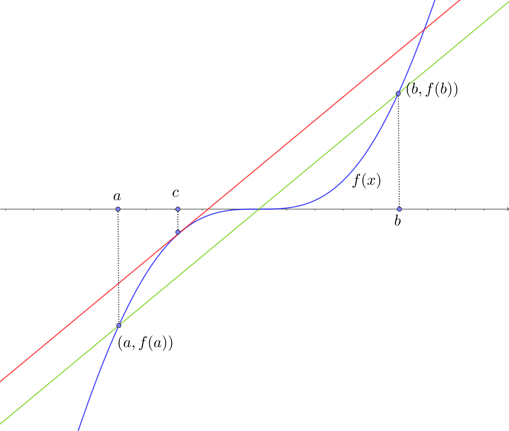

![]()

Cálculo I
La Derivada
2025-07-23
Derivada de una función en un punto del dominio de la misma
Introducción
La derivada de una función sirve para formalizar la noción de recta tangente en un punto \(x_0\) para una función \(f(x)\).
En el gráfico siguiente, podemos observar un ejemplo del dibujo de una función junto con la recta tangente en un punto \(x_0\) de su dominio.
La pendiente de la recta tangente (en rojo) vendría a representar lo que denominaremos la derivada de la función \(f(x)\) en \(x=x_0\).
Introducción

Introducción
Definición de derivada de una función en un punto
Consideremos la figura anterior.
La pendiente de una recta recordemos que se define como la tangente del ángulo con el eje de las \(x\).
Hemos dibujado una función \(f(x)\) que pasa por el punto \((x_0,f(x_0))\) junto con una recta secante que pasa por el punto.
Otro punto de dicha recta dado un valor \(h\) sería \((x_0+h,f(x_0+h))\). Intuitivamente dicha recta secante “tiende” a la tangente cuando el valor \(h\) tiende a cero.
Definición de derivada de una función en un punto
La pendiente de la recta secante como puede observarse es la tangente del ángulo \(\alpha\) que vale \(\frac{f(x_0+h)-f(x_0)}{h}\). Entonces, la definición de derivada de \(f(x)\) en \(x=x_0\) es la siguiente:
Definición de derivada de una función en un punto
Definición de derivada en un punto.
Sea \(f:(a,b)\longrightarrow \mathbb{R}\) una función real de variable real. Sea \(x_0\in (a,b)\). Diremos que \(f\) es derivable en \(x_0\) o que existe la derivada de \(f\) en \(x_0\) cuando existe el límite siguiente: \[ \lim_{h\to 0}\frac{f(x_0+h)-f(x_0)}{h}, \] y, en caso en que exista, llamaremos a dicho límite derivada de la función \(f\) en \(x_0\) escrita matemáticamente como \(f'(x_0)\).
Definición de derivada de una función en un punto
Observación.
La derivada de una función es un propiedad local, es decir, está definida en un punto \(x_0\) del dominio.
Cuando, haciendo un abuso del lenguaje, se dice que la función \(f\) es derivable, se quiere decir que dicha función es derivable en todos los puntos del dominio de la misma.
Definición de derivada de una función en un punto
Observación.
La derivada de una función \(f\) en un punto de su dominio \(x_0\) se puede expresar también de la forma siguiente: \[ \lim_{x\to x_0}\frac{f(x)-f(x_0)}{x-x_0}. \] Para comprobar la afirmación anterior, basta considerar el cambio de variable siguiente \(x=x_0+h\), de donde \(h=x-x_0\) y aplicar la definición de derivada.
Fijaos que decir que \(h\) tiende a cero es equivalente a decir que \(x\) tiende a \(x_0\).
Ejemplos
Derivada de la función constante
Veamos que si la función \(f\) es constante en todo su dominio, \(f(x)=k\), para todo \(x\) del dominio, la derivada de \(f\) en cualquier punto del mismo es nula.
Sea \(x_0\) un punto del dominio de \(f\). La derivada de \(f\) en \(x_0\) será: \[ f'(x_0)=\lim_{x\to x_0}\frac{f(x)-f(x_0)}{x-x_0}=\lim_{x\to x_0}\frac{k-k}{x-x_0}=\lim_{x\to x_0} 0 =0. \]
Ejemplos
Derivada del monomio de grado \(n\)
Calculemos la derivada de función \(f\) si ésta vale \(f(x)=x^n\), donde \(n\) es un valor natural mayor que \(1\) (\(n=1,2,\ldots\)):
Sea \(x_0\) un punto del dominio de \(f\). La derivada de \(f\) en \(x_0\) será: \[ \begin{array}{rl} f'(x_0) & =\displaystyle\lim_{x\to x_0}\frac{f(x)-f(x_0)}{x-x_0}=\lim_{x\to x_0}\frac{x^n-x_0^n}{x-x_0}=\lim_{x\to x_0} \frac{(x-x_0)(x^{n-1}+x^{n-2}x_0+x^{n-3}x_0^2+\cdots+ x_0^{n-1})}{x-x_0} \\ & \displaystyle =\lim_{x\to x_0} x^{n-1}+x^{n-2}x_0+x^{n-3}x_0^2+\cdots+ x_0^{n-1} =n\cdot x_0^{n-1}. \end{array} \]
Ejemplo
Derivada del monomio de grado \(n\)
La derivada de la función anterior en Wolfram Alpha se muestra en el enlace siguiente: ::: center 
:::
Ejemplos
Derivada del valor absoluto
Consideremos la función \(f(x)=|x|\), valor absoluto de \(x\), definida en todo \(\mathbb{R}\) como: \(f(x)=\begin{cases} x, & \mbox{si } x\geq 0, \\ -x & \mbox{si }x<0. \end{cases}\)
Estudiemos la derivabilidad de \(f\) en \(x_0=0\), es decir, veamos si el límite siguiente existe: \(\displaystyle\lim_{x\to 0}\frac{f(x)-f(0)}{x-0}=\lim_{x\to 0}\frac{|x|}{x}\).
Si hacemos el límite anterior por la derecha o para los valores \(x>0\), obtenemos: \[ \lim_{x\to 0^+}\frac{|x|}{x}=\lim_{x\to 0^+}\frac{x}{x}=\lim_{x\to 0^+}1 =1. \] En cambio, si lo hacemos por la izquierda o para los valores \(x<0\), obtenemos: \[ \lim_{x\to 0^-}\frac{|x|}{x}=\lim_{x\to 0^-}\frac{-x}{x}=\lim_{x\to 0^-} -1 =-1. \]
Ejemplos
Derivada del valor absoluto
Como los límites anteriores no coinciden, concluimos que el límite \(\displaystyle \lim_{x\to 0}\frac{|x|}{x}\) no existe y por tanto, \(f\) no es derivable en \(x=0\).
Gráficamente se observa que la función anterior tiene una punta en \(x=0\) y, por tanto, \(f\) no puede ser derivable en dicho punto.
Este comportamiento es el usual cuando una función no es derivable en un punto \(x_0\), es decir, se observa gráficamente que en dicho punto, la función no tiene un comportamiento suave.
Ejemplos
Derivada del valor absoluto

Ejemplo
Derivada del valor absoluto
La gráfica del valor absoluto en Wolfram Alpha se muestra en el enlace siguiente:
Propiedades de las funciones derivables
Derivabilidad implica continuidad
Sea \(f\) una función real de variable real y sea \(x_0\) un punto del dominio de \(f\). Si \(f\) es derivable en \(x_0\), entonces \(f\) es continua en \(x_0\).
Derivabilidad implica continuidad
Demostración.
Definimos la función siguiente en un entorno de punto \(x_0\): \[ g(x)=\begin{cases} \frac{f(x)-f(x_0)}{x-x_0}, & \mbox{si }x\neq x_0,\\ f'(x_0), & \mbox{si } x=x_0. \end{cases} \] Usando que \(f\) es derivable en \(x_0\), tenemos que la función \(g\) definida anteriormente será continua en \(x_0\) ya que: \[ \lim_{x\to x_0} g(x)=\lim_{x\to x_0} \frac{f(x)-f(x_0)}{x-x_0}=f'(x_0)=g(x_0). \] Si despejamos \(f(x)\) de la expresión de \(g(x)\) obtenemos \(f(x)=f(x_0)+g(x)\cdot (x-x_0)\).
Veamos que \(f\) es continua en \(x_0\): \[ \lim_{x\to x_0}f(x)=\lim_{x\to x_0} f(x_0)+g(x)\cdot (x-x_0) = f(x_0)+f'(x_0)\cdot 0 = f(x_0), \] tal como queríamos ver.
La derivada de la suma es suma de derivadas
Sean \(f\) y \(g\) dos funciones reales de variable real y sea \(x_0\) un valor del dominio de \(f\) y de \(g\). Si \(f\) y \(g\) son derivables en \(x_0\), también lo es la función suma \(f+g\), y se verifica que: \((f+g)'(x_0)=f'(x_0)+g'(x_0)\).
Demostración: \[ \begin{array}{rl} (f+g)'(x_0) & = \displaystyle\lim_{x\to x_0}\frac{(f+g)(x)-(f+g)(x_0)}{x-x_0}=\lim_{x\to x_0}\frac{f(x)+g(x)-f(x_0)-g(x_0)}{x-x_0} \\ & = \displaystyle \lim_{x\to x_0}\frac{f(x)-f(x_0)}{x-x_0} + \lim_{x\to x_0}\frac{g(x)-g(x_0)}{x-x_0}=f'(x_0)+g'(x_0). \end{array} \]
La derivada de una función por una constante es la constante por la derivada de la función
Sea \(k\in\mathbb{R}\) un valor real, \(f\) una función real de variable real y \(x_0\) un punto del dominio de \(f\). Entonce si \(f\) es derivable en \(x_0\), también lo es \(k\cdot f\) y se verifica que: \((k\cdot f)'(x_0)=k\cdot f'(x_0)\).
Demostración:
\[ \begin{array}{rl} (k\cdot f)'(x_0) & \displaystyle =\lim_{x\to x_0}\frac{(k\cdot f)(x)-(k\cdot f)(x_0)}{x-x_0}= \lim_{x\to x_0}\frac{k\cdot f(x)-k\cdot f(x_0)}{x-x_0}=\lim_{x\to x_0}\frac{k\cdot (f(x)-f(x_0))}{x-x_0} \\ &\displaystyle =k\lim_{x\to x_0}\frac{ f(x)-f(x_0)}{x-x_0}=k f'(x_0). \end{array} \]
La derivada del producto de funciones
Sean \(f\) y \(g\) dos funciones reales de variable real y sea \(x_0\) un punto del dominio de \(f\) y de \(g\). Si \(f\) y \(g\) son derivables en \(x_0\), también lo es la función producto \(f\cdot g\), y se verifica que: \((f\cdot g)'(x_0)=f'(x_0)\cdot g(x_0)+f(x_0)\cdot g'(x_0)\).
Demostración: \[ \begin{array}{rl} (f\cdot g)'(x_0) & = \displaystyle\lim_{x\to x_0}\frac{(f\cdot g)(x)-(f\cdot g)(x_0)}{x-x_0}=\lim_{x\to x_0}\frac{f(x)\cdot g(x)-f(x_0)\cdot g(x_0)}{x-x_0} \\ & = \displaystyle \lim_{x\to x_0}\frac{f(x)\cdot g(x)-f(x)\cdot g(x_0)+f(x)\cdot g(x_0)-f(x_0)\cdot g(x_0)}{x-x_0}\\ & = \displaystyle \lim_{x\to x_0}\frac{f(x)\cdot (g(x)- g(x_0))+(f(x)-f(x_0))\cdot g(x_0)}{x-x_0}\\ & = \displaystyle \lim_{x\to x_0}f(x)\cdot\frac{g(x)- g(x_0)}{x-x_0}+\lim_{x\to x_0}\frac{f(x)-f(x_0)}{x-x_0}\cdot g(x_0)=f(x_0)\cdot g'(x_0)+f'(x_0)\cdot g(x_0). \end{array} \]
La derivada del cociente de funciones
Sean \(f\) y \(g\) dos funciones reales de variable real y sea \(x_0\) un punto del dominio de \(f\) y de \(g\) tal que \(g'(x_0)\neq 0\). Si \(f\) y \(g\) son derivables en \(x_0\), también lo es la función cociente \(\frac{f}{g}\), y se verifica que: \(\left(\frac{f}{g}\right)'(x_0)=\frac{f'(x_0)\cdot g(x_0)-f(x_0)\cdot g'(x_0)}{g(x_0)^2}\).
Demostración: \[ \begin{array}{rl} \left(\frac{f}{g}\right)'(x_0) & = \displaystyle\lim_{x\to x_0}\frac{\left(\frac{f}{g}\right)(x)-\left(\frac{f}{g}\right)(x_0)}{x-x_0}=\lim_{x\to x_0}\frac{\frac{f(x)}{g(x)}-\frac{f(x_0)}{g(x_0)}}{x-x_0} =\lim_{x\to x_0} \frac{f(x)\cdot g(x_0)-g(x)\cdot f(x_0)}{g(x)\cdot g(x_0)\cdot (x-x_0)} \\ & \displaystyle =\lim_{x\to x_0} \frac{f(x)\cdot g(x_0)-f(x_0)\cdot g(x_0)+f(x_0)\cdot g(x_0) -g(x)\cdot f(x_0)}{g(x)\cdot g(x_0)\cdot (x-x_0)} \\ & = \displaystyle \lim_{x\to x_0}\frac{1}{g(x)\cdot g(x_0)}\cdot \left(\lim_{x\to x_0}\frac{f(x)-f(x_0)}{x-x_0}\cdot g(x_0)-f(x_0)\cdot \lim_{x\to x_0} \frac{g(x)-g(x_0)}{x-x_0}\right) \\ & = \displaystyle \frac{1}{g(x_0)^2}(f'(x_0)\cdot g(x_0)-f(x_0)\cdot g'(x_0)). \end{array} \]
Derivada de la función inversa
Sea \(f\) una función real de variable real y \(x_0\) un punto del dominio de \(f\). Suponemos que \(f\) es derivable en \(x_0\) y que \(f'(x_0)\neq 0\). Supongamos que \(f\) admite inversa \(g\), es decir, existe una función \(g\) tal que \(g\circ f=\mathrm{Id}\), es decir, para cualquier valor \(x\) del dominio de \(f\), se cumple que \(g(f(x))=x\). Además, suponemos que \(g\) es continua en \(f(x_0)\). Entonces \(g\) es derivable en \(f(x_0)\) y se verifica que \[g'(f(x_0))=\frac{1}{f'(x_0)}.\]
Derivada de la función inversa
Demostración:
El valor de \(g'(f(x_0))\) es: \(g'(f(x_0)) = \displaystyle\lim_{y\to f(x_0)}\frac{g(y)-g(f(x_0))}{y-f(x_0)}.\)
Para el cálculo del límite anterior, hacemos el cambio de variable siguiente: \(y=f(x)\), o lo que es lo mismo, \(x=g(y)\). Como \(y\) tiende a \(f(x_0)\), tendremos con la variable nueva que \(f(x)\) tiende a \(f(x_0)\) pero como \(g\) es continua en \(f(x_0)\), deducimos que \(g(f(x))=x\) tiende a \(g(f(x_0))=x_0\). En resumen, el límite anterior puede escribirse como: \[ g'(f(x_0)) =\lim_{x\to x_0}\frac{g(f(x))-g(f(x_0))}{f(x)-f(x_0)}=\lim_{x\to x_0}\frac{x-x_0}{f(x)-f(x_0)} = \frac{1}{\displaystyle\lim_{x\to x_0}\frac{f(x)-f(x_0)}{x-x_0}}=\frac{1}{f'(x_0)}. \]
Ejemplo
Ejemplo: derivada de la función \(g(x)=\sqrt[n]{x}\).
La función \(g(x)=\sqrt[n]{x}\) es la inversa de la función \(f(x)=x^n\) ya que: \(g(f(x))=g(x^n)=\sqrt[n]{x^n}=x\).
Usando la expresión vista anteriormente, podemos escribir que: \(g'(f(x))=g'(x^n)=\frac{1}{f'(x)}\).
En un ejemplo anterior vimos que \(f'(x)=n\cdot x^{n-1}\). Por tanto: \(g'(x^n)=\frac{1}{n\cdot x^{n-1}}\).
Sea \(y=x^n\), entonces \(x=\sqrt[n]{y}\). Por tanto, \(g'(y)=\frac{1}{n\cdot x^{n-1}}=\frac{1}{n\cdot \sqrt[n]{y^{n-1}}}\).
La derivada de la función \(g(x)\) en Wolfram Alpha se muestra en el enlace siguiente:
Ejemplo
Ejemplo: derivada de la función \(\tan x\).
La función \(\tan x\) está definida como \(\frac{\sin x}{\cos x}\).
Calculemos primero la derivada de la función \(\sin x\) en un valor \(x_0\): \[ \begin{array}{rl} (\sin)'(x_0) & \displaystyle =\lim_{x\to x_0}\frac{\sin x-\sin x_0}{x-x_0}=\lim_{x\to x_0}\frac{2\cos\left(\frac{x+x_0}{2}\right)\cdot\sin\left(\frac{x-x_0}{2}\right)}{x-x_0}=2\cdot \cos(x_0)\lim_{x\to x_0}\frac{\sin\left(\frac{x-x_0}{2}\right)}{x-x_0} \\ & \displaystyle = \cos(x_0)\lim_{x\to x_0}\frac{\sin\left(\frac{x-x_0}{2}\right)}{\frac{x-x_0}{2}} = \cos(x_0), \end{array} \] usando que \(\lim\limits_{x\to x_0}\frac{\sin\left(\frac{x-x_0}{2}\right)}{\frac{x-x_0}{2}}=1.\) La expresión anterior se deduce del hecho de que \(\lim\limits_{t\to 0} \frac{\sin t}{t}=1\).
Si se hace el cambio de variable \(t=\frac{x-x_0}{2}\) y teniendo en cuenta que como \(x\to x_0\), entonces \(t\to 0\), los dos límites anteriores son iguales a 1.
Ejemplo
Ejemplo: derivada de la función \(\tan x\).
Para calcular la derivada de la función \(\cos x\), usamos una técnica similar: \[ \begin{array}{rl} (\cos)'(x_0) & \displaystyle =\lim_{x\to x_0}\frac{\cos x-\cos x_0}{x-x_0}=\lim_{x\to x_0}\frac{-2\sin\left(\frac{x+x_0}{2}\right)\cdot\sin\left(\frac{x-x_0}{2}\right)}{x-x_0}=-2\cdot \sin(x_0)\lim_{x\to x_0}\frac{\sin\left(\frac{x-x_0}{2}\right)}{x-x_0} \\ & \displaystyle =- \sin(x_0)\lim_{x\to x_0}\frac{\sin\left(\frac{x-x_0}{2}\right)}{\frac{x-x_0}{2}} = -\sin(x_0). \end{array} \] Usamos la propiedad de la derivada del cociente, podemos hallar la derivada de la función \(\tan x\): \[ \begin{array}{rl} (\tan)'(x_0) & =\left(\frac{\sin}{\cos}\right)'(x_0)=\frac{\sin'(x_0)\cdot \cos(x_0)-\sin (x_0)\cdot \cos'(x_0)}{\cos^2(x_0)}=\frac{\cos(x_0)\cdot \cos(x_0)+\sin (x_0)\cdot \sin(x_0)}{\cos^2(x_0)} \\ & = \frac{\cos^2(x_0)+\sin^2(x_0)}{\cos^2(x_0)}=\frac{1}{\cos^2 (x_0)}=1+\tan^2 (x_0). \end{array} \]
La derivada de la función \(\tan x\) en Wolfram Alpha se muestra en el enlace siguiente:
Derivada de la función compuesta. Regla de la cadena
Sean \(f\) y \(g\) dos funciones reales de variable real. Sea \(x_0\) un punto del dominio de \(f\) tal que \(f(x_0)\) es del dominio de \(g\). Supongamos que \(g\) es derivable en \(f(x_0)\) y \(f\) es derivable en \(x_0\). Entonces la función compuesta \(g\circ f\) es derivable en \(x_0\) y se verifica que:
\[(g\circ f)'(x_0)=g'(f(x_0))\cdot f'(x_0).\]
Derivada de la función compuesta. Regla de la cadena
Demostración: \[ \begin{array}{rl} (g\circ f)'(x_0) & \displaystyle =\lim_{x\to x_0}\frac{(g\circ f)(x)-(g\circ f)(x_0)}{x-x_0}=\lim_{x\to x_0}\frac{g(f(x))-g(f(x_0))}{x-x_0} \\ & \displaystyle =\lim_{x\to x_0}\frac{g(f(x))-g(f(x_0))}{f(x)-f(x_0)}\cdot \lim_{x\to x_0}\frac{f(x)-f(x_0)}{x-x_0}=g'(f(x_0))\cdot f'(x_0). \end{array} \] En el último cálculo, podemos afirmar que el límite \(\displaystyle\lim_{x\to x_0}\frac{g(f(x))-g(f(x_0))}{f(x)-f(x_0)}\) vale \(g'(f(x_0))\) porque como \(f\) es derivable en \(x_0\), \(f\) será continua en \(x_0\) y si \(x\to x_0\), entonces \(f(x)\to f(x_0)\) y el límite anterior queda: \[ \lim_{x\to x_0}\frac{g(f(x))-g(f(x_0))}{f(x)-f(x_0)} =\lim_{f(x)\to f(x_0)}\frac{g(f(x))-g(f(x_0))}{f(x)-f(x_0)}=g'(f(x_0)). \]
Ejemplo
Ejemplo
Hallemos la derivada de la función \(h(x)=\arctan (x^3+x^2+1)\).
La función anterior es la composición de la función \(f(x)=x^3+x^2+1\) y \(g(y)=\arctan y\), es decir: \(h(x)=(g\circ f)(x)\).
La derivada de la función \(f(x)\) se puede calcular usando la propiedad de la suma de derivadas y la expresión de la derivada del monomio \(x^n\): \[ (x^3+x^2+1)'=(x^3)'+(x^2)'+(1)' = 3x^2+2x+0=3x^2+2x. \]
A continuación, hallemos la derivada de la función \(g(y)=\arctan y\). Dicha función es la función inversa de la función \(\tan x\). Usando la expresión de la derivada de la función inversa, tenemos: \[ g'(\tan x)=\frac{1}{\tan'(x)}=\frac{1}{\frac{1}{\cos^2 x}}=\cos^2 x. \]
Ejemplo
Ejemplo
Para hallar \(g'(y)\), tenemos que escribir \(y=\tan x\), y, por tanto, \(x=\arctan y\): \[ g'(y)=\cos^2(\arctan y)=\frac{1}{1+\tan^2 (\arctan y)}=\frac{1}{1+y^2}, \] donde hemos usado la siguiente relación trigonométrica: \(\cos^2\alpha = \frac{1}{1+\tan^2\alpha}\).
La derivada de la función \(h(x)\) usando la regla de la cadena será: \[ \begin{array}{rl} h'(x) & =(g\circ f)'(x)=g'(f(x))\cdot f'(x)=\frac{1}{1+f(x)^2}\cdot (3 x^2+2x)=\frac{3x^2+2x}{1+(x^3+x^2+1)^2}\\ & =\frac{3x^2+2x}{x^6+2 x^5+x^4+2 x^3+2 x^2+2}. \end{array} \]
La derivada de la función \(h(x)\) en Wolfram Alpha se muestra en el enlace siguiente:
Tablas de derivadas
Si vais al enlace siguiente tablas de derivadas y escribís “tablas de derivadas” en la casilla de búsqueda, encontraréis un montón de tablas de derivadas para las funciones más usadas.
Teoremas de derivación
Derivación y extremos
Sea \(f: (a,b)\longrightarrow \mathbb{R}\) una función real de variable real. Sea \(x_0\in (a,b)\) un valor del dominio de \(f\). Diremos que \(f\) tiene un máximo relativo en el punto \(x_0\) si existe un entorno de \(x_0\), es decir, existe un valor \(\delta >0\), tal que para todo valor \(x\) de este entorno, es decir, \(x\in (x_0-\delta,x_0+\delta)\subseteq (a,b)\), se cumple que \(f(x)\leq f(x_0)\).
Si la condición anterior se verifica para cualquier punto \(x\in (a,b)\), diremos que \(f\) tiene un máximo absoluto en el punto \(x_0\).
Derivación y extremos
Sea \(f: (a,b)\longrightarrow \mathbb{R}\) una función real de variable real. Sea \(x_0\in (a,b)\) un valor del dominio de \(f\). Diremos que \(f\) tiene un mínimo relativo en el punto \(x_0\) si existe un entorno de \(x_0\), es decir, existe un valor \(\delta >0\), tal que para todo punto \(x\) de este entorno, es decir, \(x\in (x_0-\delta,x_0+\delta)\subseteq (a,b)\), se cumple que \(f(x)\geq f(x_0)\).
Si la condición anterior se verifica para cualquier valor \(x\in (a,b)\), diremos que \(f\) tiene un mínimo absoluto en el punto \(x_0\).
Los puntos donde \(f\) presente un máximo o un mínimo relativos o absolutos se denominan extremos relativos o absolutos de la función.
Ejemplo
Ejemplo
Consideremos la función siguiente definida en el intervalo \((-2\pi,2\pi)\): \[ \begin{array}{rl} f:(-2\pi,2\pi) & \longrightarrow \mathbb{R},\\ x& \longrightarrow \sin(x)-\cos(x). \end{array} \] El gráfico de dicha función puede observase en la figura siguiente.
Vemos que tiene dos máximos relativos en los valores \(x=-\frac{5}{4}\pi\) y \(x=\frac{3}{4}\pi\) y dos mínimos relativos en los valores \(x=-\frac{\pi}{4}\) y \(x=\frac{7}{4}\pi\).
Observamos que dichos máximos y mínimos son absolutos.
El gráfico de la función anterior puede verse en Wolfram Alpha en el enlace siguiente:
Ejemplo

Derivación y extremos
Sea \(f: (a,b)\longrightarrow \mathbb{R}\) una función real de variable real. Sea \(x_0\in (a,b)\) un valor del dominio de \(f\) que sea extremo relativo de la función. Entonces si \(f\) es derivable en el punto \(x_0\), se verifica que \(f'(x_0)=0\).
Intuitivamente, el teorema anterior nos dice que si la función \(f\) tiene un comportamiento suave en el extremo \(x_0\), la recta tangente en este punto tiene que ser horizontal, es decir, su pendiente tiene que ser nula, tal como podemos observar en los extremos del ejemplo anterior.
Derivación y extremos
Demostración
Como \(f\) es derivable en el punto \(x_0\), sabemos que existe el límite siguiente \(\displaystyle\lim_{x\to x_0}\frac{f(x)-f(x_0)}{x-x_0}\).
Decir que \(f\) es derivable en \(x_0\) es equivalente a decir que la función siguiente: \[ g(x)=\begin{cases} \frac{f(x)-f(x_0)}{x-x_0}, & \mbox{si }x\neq x_0,\\ f'(x_0), &\mbox{si }x=x_0, \end{cases} \] es continua en \(x_0\).
Veamos a continuación que necesariamente \(g(x_0)=f'(x_0)=0\) y quedará demostrado el teorema.
Supongamos que \(g(x_0)>0\). Como la función \(g\) es continua en \(x_0\), por el teorema de conservación del signo de funciones continuas, existirá un entorno de \(x_0\), es decir, existirá un \(\delta >0\) tal que si \(x\in (x_0-\delta,x_0+\delta)\subseteq (a,b)\), \(g(x)>0\) también será positiva para todos los valores \(x\) de dicho entorno.
Derivación y extremos
Demostración
Es decir, para todo \(x\in (x_0-\delta,x_0+\delta)\), \(g(x)=\frac{f(x)-f(x_0)}{x-x_0}>0\).
Esto es equivalente a decir que el numerador y el denominador de la fracción anterior tienen el mismo signo, dicho en otras palabras:
- si \(x\in (x_0-\delta,x_0+\delta)\) y \(x>x_0\), entonces \(f(x) > f(x_0)\) y,
- si \(x\in (x_0-\delta,x_0+\delta)\) y \(x<x_0\), entonces \(f(x) < f(x_0)\).
Las condiciones anteriores contradicen el hecho que \(x_0\) sea un extremo ya que hemos encontrado valores en un entorno del mismo que superan \(f(x_0)\) y valores del mismo entorno que son menores que \(f(x_0)\). En conclusión, llegamos a una contradicción al suponer que \(g(x_0)=f'(x_0)>0\).
Ejercicio
Suponer que \(g(x_0)=f'(x_0)<0\) y ver que se llega a una contradicción razonando de manera similar.
Derivación y extremos
Demostración
Al no poder ser que \(f'(x_0)>\) ni \(f'(x_0)<0\), necesariamente \(f'(x_0)=0\) tal como queríamos demostrar.
El recíproco del teorema anterior es falso. Es decir, el hecho que \(f'(x_0)\) sea \(0\), no implica que \(x_0\) sea un extremo relativo de la función.
Ejemplo
Considerar, por ejemplo, la función \(f(x)=x^2\cdot \sin(x)\). Si derivamos dicha función, obtenemos: \[ f'(x)=2x\sin(x)+x^2\cos(x). \] Vemos que \(f'(0)=0\). En cambio \(f\) no tiene ningún extremo en este punto tal como se observa en el gráfico de su función:
Derivación y extremos
Ejemplo

Derivación y extremos
Ejemplo
Para ver que el 0 no es extremo relativo, es facil ver que para \(x\in (0,\pi)\), \(f(x)\geq 0\) y para \(x\in (-\pi,0)\), \(f(x)\leq 0\). Comprobémoslo para unos cuantos valores en python, para \(x=-0.2,-0.1,0.1,0.2\):
Derivación y extremos
Ejemplo
f(-0.2)=-0.00794677323180245
f(-0.1)=-0.000998334166468282
f(0.1)=0.000998334166468282
f(0.2)=0.00794677323180245Derivación y extremos
Ejemplo
El cálculo de la derivada de la función anterior puede verse en Wolfram Alpha en el enlace siguiente:
El gráfico de la función anterior puede verse en Wolfram Alpha en el enlace siguiente:
Derivación y extremos
Definición de crecimiento de una función.
Sea \(f: (a,b)\longrightarrow \mathbb{R}\) una función real de variable real. Sea \(x_0\in (a,b)\) un valor del dominio de \(f\). Diremos que \(f\) es estrictamente creciente en el punto \(x_0\) si existe un entorno de \(x_0\), es decir, existe un valor \(\delta >0\) tal que para todo \(x\) de dicho entorno diferente de \(x_0\), o si \(x\in (x_0-\delta,x_0+\delta)\subseteq (a,b)\), con \(x\neq x_0\), se verifica que el cociente siguiente es positivo: \(\frac{f(x)-f(x_0)}{x-x_0}>0\).
Observación.
La definición anterior es equivalente a decir que existe un valor \(\delta >0\) tal que si \(x\in (x_0,x_0+\delta)\) o \(x>x_0\), entonces \(f(x)>f(x_0)\) y si \(x\in (x_0-\delta, x_0)\) o \(x<x_0\), entonces \(f(x)<f(x_0)\). Ver el gráfico siguiente.
Derivación y extremos

Derivación y extremos
Definición de decrecimiento de una función.
Sea \(f: (a,b)\longrightarrow \mathbb{R}\) una función real de variable real. Sea \(x_0\in (a,b)\) un valor del dominio de \(f\). Diremos que \(f\) es estrictamente decreciente en el punto \(x_0\) si existe un entorno de \(x_0\), es decir, existe un valor \(\delta >0\) tal que para todo \(x\) de dicho entorno diferente de \(x_0\), o si \(x\in (x_0-\delta,x_0+\delta)\subseteq (a,b)\), con \(x\neq x_0\), se verifica que el cociente siguiente es negativo: \(\frac{f(x)-f(x_0)}{x-x_0}<0\).
Observación.
La definición anterior es equivalente a decir que existe un valor \(\delta >0\) tal que si \(x\in (x_0,x_0+\delta)\) o \(x>x_0\), entonces \(f(x)<f(x_0)\) y si \(x\in (x_0-\delta, x_0)\) o \(x<x_0\), entonces \(f(x)>f(x_0)\). Ver gráfico siguiente.
Derivación y extremos

Derivación y extremos
Observación.
Si la desigualdad \(\frac{f(x)-f(x_0)}{x-x_0}\geq 0\) no es estricta, se dice que \(f\) es creciente.
Observación.
Si la desigualdad \(\frac{f(x)-f(x_0)}{x-x_0}\leq 0\) no es estricta, se dice que \(f\) es decreciente.
Derivación y extremos
Proposición
Sea \(f: (a,b)\longrightarrow \mathbb{R}\) una función real de variable real. Sea \(x_0\in (a,b)\) un valor del dominio de \(f\). Supongamos que \(f\) es derivable en \(x_0\). Entonces si \(f'(x_0)>0\) o \(f\) tiene derivada positiva en \(x_0\), entonces \(f\) es estrictamente creciente en \(x_0\).
Demostración
Como \(\displaystyle f'(x_0)=\lim_{x\to x_0}\frac{f(x)-f(x_0)}{x-x_0}>0\), usando la definición de límite tenemos que: \[ \forall \epsilon >0,\ \exists\delta >0\ \mbox{t.q. si }|x-x_0|<\delta,\mbox{ entonces }\left|f'(x_0)-\frac{f(x)-f(x_0)}{x-x_0}\right|< \epsilon. \]
Derivación y extremos
Demostración
La última condición se puede escribir de la siguiente manera: \[ f'(x_0)-\epsilon < \frac{f(x)-f(x_0)}{x-x_0} < f'(x_0)+\epsilon. \] Como \(f'(x_0)>0\), siempre es posible hallar un \(\epsilon >0\) tal que \(f'(x_0)-\epsilon>0\).
Para este \(\epsilon >0\), podemos encontrar un entorno de \(x_0\), es decir, un \(\delta >0\) tal que si \(x\in (x_0-\delta,x_0+\delta)\), entonces: \[ 0<f'(x_0)-\epsilon < \frac{f(x)-f(x_0)}{x-x_0} < f'(x_0)+\epsilon, \] de donde deducimos que \(\frac{f(x)-f(x_0)}{x-x_0}>0\) para todo \(x\) del entorno, \(x\in (x_0-\delta,x_0+\delta)\), lo que equivale a decir que \(f\) es estrictamente creciente en \(x_0\).
Derivación y extremos
Proposición.
Sea \(f: (a,b)\longrightarrow \mathbb{R}\) una función real de variable real. Sea \(x_0\in (a,b)\) un valor del dominio de \(f\). Supongamos que \(f\) es derivable en \(x_0\). Entonces si \(f'(x_0)<0\) o \(f\) tiene derivada negativa en \(x_0\), entonces \(f\) es estrictamente decreciente en \(x_0\).
Ejercicio
Demostrar la proposición anterior usando la misma técnica que para demostrar que si \(f'(x_0)>0\), entonces \(f\) es estrictamente creciente en \(x_0\).
Ejemplo
Ejemplo
Consideremos la función siguiente de un ejemplo anterior: \(f(x)=\sin(x)-\cos(x)\).
La derivada de la función \(f\) vale: \(f'(x)=\cos(x)+\sin(x)\).
Dicha función se anula en los extremos \(x=-\frac{5}{4}\pi,-\frac{\pi}{4},\frac{3}{4}\pi\) y \(\frac{7}{4}\pi\):
f'(-5*pi/4)=0
f'(-pi/4)=0
f'(3*pi/4)=0
f'(7*pi/4)=0Ejemplo
En los puntos \(x=-\frac{3}{2}\pi\) y \(x=\frac{\pi}{2}\) la función es estrictamente creciente al tener derivada positiva en dichos puntos:
f'(-3*pi/2)=1
f'(pi/2)=1En cambio, en los puntos \(x=-\frac{\pi}{2}\) y \(\frac{3}{2}\pi\) la función es estrictamente decreciente al tener derivada negativa en dichos puntos:
f'(-pi/2)=-1
f'(3*pi/2)=-1Teoremas de Rolle y del valor medio
Las proposiciones vistas hasta ahora nos permiten determinar el comportamiento local de una función en un punto en términos de su crecimiento dependiendo del signo de la derivada de dicha función en dicho punto.
Vamos a ver dos resultados que nos permiten determinar las propiedades globales de la función en todo su dominio a partir del comportamiento de la función derivada de dicha función.
El teorema de Rolle dice que si los valores de una función derivable en todo el interior de un intervalo, los valores coinciden en los extremos del mismo, necesariamente ha de tener al menos un máximo o un mínimo Intuitivamente, el resultado es claro ya que si suponemos por ejemplo que la función crece en su extremo izquierdo \(a\), como \(f(a)=f(b)\), donde \(b\) es su extremo derecho, en algún momento tiene que decrecer. Por tanto, en dicho momento, la función tendrá un extremo o un máximo en este caso.
Teoremas de Rolle y del valor medio

Teoremas de Rolle y del valor medio
El teorema del valor medio dice que dada una función derivable en todo su dominio, ha de existir un punto en el que recta tangente en dicho punto sea paralela a la recta que pasa por los extremos del dominio de la función.
En el gráfico siguiente la recta verde es la recta que pasa por los extremos de la función (en azul) y la recta roja es la recta tangente al punto \(c\) que pertenece al dominio de la función.
Teoremas de Rolle y del valor medio

Teorema de Rolle
Teorema de Rolle.
Sea \(f: [a,b]\longrightarrow \mathbb{R}\) una función real de variable real. Supongamos que \(f\) es continua en todo su dominio \([a,b]\) y derivable en los puntos del interior \((a,b)\). Supongamos además que las imágenes en los extremos coinciden, es decir, \(f(a)=f(b)\). Entonces existe al menos un punto \(c\in (a,b)\) tal que \(f'(c)=0\).
Observación.
En el dominio de definición de \(f\) están incluidos los extremos del intervalo.
Teorema de Rolle
Demostración
Como la función \(f\) es continua en el intervalo cerrado \([a,b]\), deducimos que \(f\) tiene un máximo absoluto \(M\) y un mínimo absoluto \(m\).
Pueden ocurrir dos casos:
- Que el máximo absoluto se alcance en el extremo \(a\) y el mínimo, en el extremo \(b\), con \(f(a)=M\) y \(f(b)=m\) o al revés, es decir, que el máximo absoluto se alcance en el extremo \(b\) y el mínimo, en el extremo \(a\), con \(f(a)=m\) y \(f(b)=M\). Como \(f(a)=f(b)\), resulta que \(M=m\) y la única función en un intervalo en donde su máximo coincide con su mínimo es la función constante. En este caso \(f'(x)=0\), para todo \(x\in (a,b)\) como ya vimos anteriormente y el teorema quedaría demostrado en este caso.
- Supongamos que el máximo o el mínimo de la función se alcanza en un punto \(c\in (a,b)\) del interior del intervalo. Por un teorema visto anteriormente, tenemos que \(f'(c)=0\) y el teorema quedaría demostrado también en este caso.
Teorema del valor medio de Cauchy
Teorema del valor medio de Cauchy.
Sean \(f,g:[a,b]\longrightarrow \mathbb{R}\) dos funciones continuas en \([a,b]\) y derivables en \((a,b)\). Entonces, existe un punto \(c\in (a,b)\) del interior del intervalo tal que: \[ f'(c)\cdot (g(b)-g(a)) = g'(c)\cdot (f(b)-f(a)). \]
Teorema del valor medio de Cauchy
Demostración
Consideramos la función siguiente: \[ h(x)=f(x)\cdot (g(b)-g(a))-g(x)\cdot (f(b)-f(a)), \] que será continua en \([a,b]\) y derivable en \((a,b)\) al ser suma de productos de funciones continuas y derivables por constantes.
La idea es aplicar el teorema de Rolle a la función \(h(x)\). Calculemos \(h(a)\) y \(h(b)\): \[ \begin{array}{rl} h(a) & = f(a)\cdot (g(b)-g(a))-g(a)\cdot (f(b)-f(a)) = f(a)\cdot g(b)-g(a)\cdot f(b),\\ h(b) & = f(b)\cdot (g(b)-g(a))-g(b)\cdot (f(b)-f(a)) = -f(b)\cdot g(a)+g(b)\cdot f(a). \end{array} \] Se cumple, por tanto, que \(h(a)=h(b)\). Aplicando el teorema de Rolle a la función \(h\), tenemos que existe un punto \(c\in (a,b)\) tal que \(h'(c)=0\): \[ h'(c)=f'(c)\cdot (g(b)-g(a))-g'(c)\cdot (f(b)-f(a))=0, \] de donde deducimos lo que dice la tesis del teorema: \[ f'(c)\cdot (g(b)-g(a)) = g'(c)\cdot (f(b)-f(a)). \]
Teorema del valor medio de Lagrange
Corolario: Teorema del valor medio de Lagrange.
Sea \(f:[a,b]\longrightarrow \mathbb{R}\) una función continua en \([a,b]\) y derivable en \((a,b)\). Entonces, existe un punto \(c\in (a,b)\) del interior del intervalo tal que: \[ f(b)-f(a)=f'(c)\cdot (b-a). \]
Ejercicio
Demostrar el teorema del valor medio de Lagrange.
Indicación: considerar \(f(x)\) la función del teorema, \(g(x)=x\) y aplicar el teorema del valor medio de Cauchy.
Teorema del valor medio de Lagrange
Observación.
El Teorema del valor medio de Lagrange es equivalente a afirmar lo que hemos dicho anteriormente: si \(f\) es derivable en el intervalo abierto y continua en el cerrado, existe un punto \(c\) del interior del intervalo tal que \(f'(c)=\frac{f(b)-f(a)}{b-a}\), es decir, la pendiente de la recta tangente en el punto \(c\) coincide con la pendiente de la recta que pasa por los extremos \((a,f(a))\) y \((b,f(b))\).
Es decir, la recta tangente en el punto \(c\) es paralela a la recta que pasa por los extremos del intervalo de definición de la función \(f\).
Consecuencias de los teoremas
Corolario.
Sea \(f:[a,b]\longrightarrow \mathbb{R}\) una función continua en \([a,b]\) y derivable en \((a,b)\) tal que \(f'(x)=0\) para todo \(x\in (a,b)\). Entonces \(f\) es constante.
Demostración
Sea \(x\in (a,b]\). Veamos que \(f(x)=f(a)\) y, por tanto, \(f\) será constante.
Para ello, consideremos la función \(f\) restringida al intervalo \([a,x]\), \(f:[a,x]\longrightarrow\mathbb{R}\), que será continua en \([a,x]\) y derivable en \((a,x)\). Si aplicamos el teorema del valor medio de Lagrange, tenemos que existe un \(c\in (a,x)\) tal que: \[ f(x)-f(a)=f'(c)\cdot (x-a)=0, \] ya que nos dicen que \(f'(c)=0\) al ser la derivada nula en cualquier punto del intervalo \((a,b)\).
Deducimos, por tanto, que \(f(x)=f(a)\), condición que equivale a que la función \(f\) es constante.
Consecuencias de los teoremas
Sean \(f, g:[a,b]\longrightarrow \mathbb{R}\) funciones continuas en \([a,b]\) y derivables en \((a,b)\) tal que \(f'(x)=g'(x)\) para todo \(x\in (a,b)\). Entonces \(f(x)-g(x)\) es constante.
Ejercicio
Demostrar el corolario anterior.
Indicación: aplicar el resultado que hemos visto antes a la función \(h(x)=f(x)-g(x)\).
Consecuencias de los teoremas
Corolario.
Sea \(f:(a,b)\longrightarrow \mathbb{R}\) una función derivable en todo punto del intervalo \((a,b)\). Entonces, \(f\) es creciente en \((a,b)\) si, y sólo si, \(f'(x)\geq 0\), para todo \(x\in (a,b)\) del intervalo.
Demostración
\(\Rightarrow\) Supongamos que la función \(f\) es creciente en \((a,b)\). Esto significa que fijado \(x_0\in (a,b)\) en el intervalo, existe un entorno de \(x_0\), es decir, existe un \(\delta >0\), tal que para todo valor \(x\in (x_0-\delta,x_0+\delta)\), se verifica que \(\frac{f(x)-f(x_0)}{x-x_0}\geq 0\).
Entonces, usando que \(\displaystyle f'(x_0)=\lim_{x\to x_0} \frac{f(x)-f(x_0)}{x-x_0}\), tendremos que \(f'(x_0)\geq 0\), tal como queríamos ver.
Consecuencias de los teoremas
Demostración
\(\Leftarrow\) Supongamos ahora que \(f'(x_0)\geq 0\), para todo valor \(x_0\in (a,b)\) dentro del intervalo. Veamos que \(f\) es creciente en \(x_0\).
Sea \(x>x_0\). Si aplicamos el teorema del valor medio de Lagrange a la función \(f\) restringida al intervalo \([x_0,x]\) tenemos que existe un punto \(c\) tal que: \[ f'(c)=\frac{f(x)-f(x_0)}{x-x_0}\geq 0. \] Sea ahora \(x<x_0\). Si volvemos a aplicar el el teorema del valor medio de Lagrange a la función \(f\) restringida al intervalo \([x,x_0]\) tenemos que existe un punto \(c\) tal que: \[ f'(c)=\frac{f(x_0)-f(x)}{x_0-x}=\frac{f(x)-f(x_0)}{x-x_0}\geq 0. \]
Consecuencias de los teoremas
Demostración
En resumen, el cociente \(\frac{f(x)-f(x_0)}{x-x_0}\geq 0\) siempre es positivo, condición que equivale a afirmar que \(f\) es creciente en \(x_0\).
De hecho, hubiera sido suficiente demostrar que el cociente anterior es positivo en un entorno de \(x_0\) pero hemos demostrado más, hemos visto que dicho cociente siempre es positivo sea cual sea el valor \(x\in (a,b)\) del intervalo.
Consecuencias de los teoremas
Corolario.
Sea \(f:(a,b)\longrightarrow \mathbb{R}\) una función derivable en todo punto del intervalo \((a,b)\). Entonces, \(f\) es decreciente en \((a,b)\) si, y sólo si, \(f'(x)\leq 0\), para todo \(x\in (a,b)\) del intervalo.
Ejercicio
Demostrar el corolario anterior usando la misma técnica de demostración para el caso en que la función \(f\) es creciente.
Ejemplo
Ejemplo
Consideremos la función vista anteriormente \(f(x)=\sin (x)-\cos(x)\) definida en el intervalo \((-\pi,\pi)\).
Como \(f(-\pi)=1=f(\pi)\), aplicando el teorema de Rolle, sabemos que existe como mínimo un punto \(c\) tal que \(f'(c)=0\). De hecho, hay dos como hemos visto anteriormente: \(c=-\frac{\pi}{4}\) y \(c=\frac{3}{4}\pi\): \[ \begin{array}{rl} f'(x) & =\cos(x)+\sin(x),\\ f'\left(-\frac{\pi}{4}\right) & =\cos\left(-\frac{\pi}{4}\right)+\sin\left(-\frac{\pi}{4}\right)=\frac{\sqrt{2}}{2}-\frac{\sqrt{2}}{2}=0,\\ f'\left(\frac{3\pi}{4}\right) & =\cos\left(\frac{3\pi}{4}\right)+\sin\left(\frac{3\pi}{4}\right)=-\frac{\sqrt{2}}{2}+\frac{\sqrt{2}}{2}=0. \end{array} \] Si ahora consideramos la función anterior pero definida en el intervalo \(\left(-\frac{\pi}{2},\frac{\pi}{2}\right)\), tenemos que existe un punto \(c\) tal que: \[ f'(c)=\cos(c)+\sin(c)=\frac{f\left(\frac{\pi}{2}\right)-f\left(-\frac{\pi}{2}\right)}{\frac{\pi}{2}-\left(-\frac{\pi}{2}\right)}=\frac{1-(-1)}{\pi}=\frac{2}{\pi}. \]
Ejemplo
Hallemos a continuación el valor \(c\): \[ \begin{array}{rl} \cos(c)+\sin(c) & = \frac{2}{\pi}, \\ \cos(c) & = \frac{2}{\pi}-\sin(c), \\ \pm \sqrt{1-\sin^2(c)} & = \frac{2}{\pi}-\sin(c), \\ 1-\sin^2(c) & = \left(\frac{2}{\pi}-\sin(c)\right)^2 = \frac{4}{\pi^2}+\sin^2(c)-\frac{4}{\pi}\sin(c),\\ 2\sin^2(c)-\frac{4}{\pi}\sin(c)+\frac{4}{\pi^2}-1 & = 0,\\ \sin(c) & = \frac{\frac{4}{\pi}\pm \sqrt{\frac{16}{\pi^2}-8\cdot\left(\frac{4}{\pi^2}-1\right)}}{4},\\ \sin(c) & = \frac{\frac{4}{\pi}\pm \sqrt{8-\frac{16}{\pi^2}}}{4}=\frac{4\pm\sqrt{8\pi^2-16}}{4\pi}=\frac{2\pm\sqrt{2\pi^2-4}}{2\pi}. \end{array} \]
Ejemplo
El valor de \(\cos(c)\) será: \[ \begin{array}{rl} \cos(c) & =\pm\sqrt{1-\left(\frac{2\pm\sqrt{2\pi^2-4}}{2\pi}\right)^2} = \pm\sqrt{1-\frac{2\pi^2\pm 4\sqrt{2\pi^2-4}}{4\pi^2}}=\pm\sqrt{\frac{2\pi^2\mp4\sqrt{2\pi^2-4}}{4\pi^2}}\\ & =\pm\sqrt{\frac{(2\mp\sqrt{2\pi^2-4})^2}{4\pi^2}} = \pm\frac{(2\mp\sqrt{2\pi^2-4})}{2\pi}. \end{array} \] Entonces las parejas \((\sin(c),\cos(c))\) son las siguientes:
- si \(\sin(c)=\frac{2+\sqrt{2\pi^2-4}}{2\pi}\), entonces \(\cos(c)=\frac{2-\sqrt{2\pi^2-4}}{2\pi}\),
- si \(\sin(c)=\frac{2-\sqrt{2\pi^2-4}}{2\pi}\), entonces \(\cos(c)=\frac{2+\sqrt{2\pi^2-4}}{2\pi}\).
El primer caso no puede ser ya que \(\cos(c)<0\) y como estamos en el intervalo \(\left(-\frac{\pi}{2},\frac{\pi}{2}\right)\), la función coseno es positiva.
Sólo será solución el segundo caso, donde el valor de \(c\) será aproximadamente: -0.318.
Ejemplo
Comprobemos usando python que el valor de \(c\) hallado es el correcto:
El valor de c es: -0.3184557133984764Ejemplo
El valor de la derivada de f en c es:0.6366197723675814El valor de 2/pi es:0.6366197723675814Regla de L’Hôpital
Una de las aplicaciones más importantes de las derivadas es su aplicación al cálculo de límites de funciones.
La regla de L’Hôpital permite resolver indeterminaciones usando derivadas:
Regla de L’Hôpital
Teorema: regla de L’Hôpital.
Sean \(f,g:(a,b)\longrightarrow\mathbb{R}\) dos funciones derivables en un punto \(c\in (a,b)\). Supongamos:
- \(f(c)=g(c)=0\),
- \(g(x)\neq 0\) y \(g'(x)\neq 0\) para todo punto \(x\) del entorno de \(c\) diferente de \(c\),
Si se verifican las condiciones anteriores y el límite siguiente existe \(\displaystyle\lim_{x\to c}\frac{f'(x)}{g'(x)}\) y vale \(L\), entonces también existe el límite \(\displaystyle\lim_{x\to c}\frac{f(x)}{g(x)}\) y vale \(L\).
Regla de L’Hôpital
Demostración
Sea \(\delta >0\) tal que \((c-\delta,c+\delta)\subseteq (a,b)\) y donde se cumplen las condiciones del teorema.
Sea \(x\in (c-\delta,c+\delta)\) un punto del entorno. En el intervalo \([c,x]\) se cumplen las hipótesis del Teorema del valor medio de Cauchy, ya que \(f\) y \(g\) son derivables en \((c,x)\) al serlo en todo el entorno \((c-\delta,c+\delta)\), y continuas en \([c,x]\), ya que como son derivables en todo el entorno, serán continuas y como \([c,x]\subset (c-\delta,c+\delta)\), también serán continuas en el intervalo \([c,x]\).
Usando por tanto el Teorema del valor medio de Cauchy, podemos afirmar que existe un punto \(d\in (c,x)\) tal que: \[ f'(d)\cdot (g(d)-g(c))=g'(d)\cdot (f(d)-f(c)). \] Recordemos que \(f(c)=g(c)=0\), \(f'(d)\neq 0\) y \(g'(d)\neq 0\) ya que suponíamos que las derivadas \(f'\) y \(g'\) no se anulaban en el entorno de \(c\). Usando las condiciones anteriores, podemos simplificar la expresión anterior de la siguiente manera: \[ \frac{f'(d)}{g'(d)}=\frac{f(d)}{g(d)}. \]
Regla de L’Hôpital
Si hacemos tender \(x\to c\), como \(d\in (c,x)\), tendremos que \(d\to c\). Por tanto, \[ \lim_{x\to c}\frac{f(x)}{g(x)}=\lim_{x\to c}\frac{f'(x)}{g'(x)}=L, \] por hipótesis.
En resumen, si existe \(\displaystyle \lim_{x\to c}\frac{f'(x)}{g'(x)}\), también existe el límite \(\displaystyle \lim_{x\to c}\frac{f(x)}{g(x)}\) y los dos coinciden.
Observación.
El teorema sigue siendo cierto en el caso en que \(a\), \(b\), \(c\) o \(L\) son \(\pm \infty\). Es decir, si existe el límite \(\displaystyle \lim_{x\to \pm\infty}\frac{f'(x)}{g'(x)}\), también existe el límite \(\displaystyle \lim_{x\to \pm\infty}\frac{f(x)}{g(x)}\) y los dos coinciden y pueden tener como resultado \(\pm\infty\).
Ejemplo
Ejemplo
Calculemos el valor del límite siguiente \(\displaystyle\lim_{x\to 0}\frac{\sin x-x}{x-x\cos x}\).
Observemos que si sustituimos por el valor \(0\), obtenemos la indeterminación \(\frac{0}{0}\).
Usando la regla de L’Hôpital, calculemos el límite anterior: \[ \lim_{x\to 0}\frac{\sin x-x}{x-x\cos x} = \lim_{x\to 0}\frac{\cos x-1}{1-\cos x+x\sin x}=\frac{0}{0}. \] Nos vuelve a dar la indeterminación \(\frac{0}{0}\). Aplicando la regla de L’Hôpital por segunda vez, obtenemos: \[ \lim_{x\to 0}\frac{\cos x-1}{1-\cos x+x\sin x} =\lim_{x\to 0}\frac{-\sin x}{\sin x+\sin x+x\cos x}=\lim_{x\to 0}\frac{-\sin x}{2\sin x+x\cos x}=\frac{0}{0}. \]
Ejemplo
Nos vuelve a dar la indeterminación \(\frac{0}{0}\). Aplicando la regla de L’Hôpital por tercera vez, obtenemos: \[ \lim_{x\to 0}\frac{-\sin x}{2\sin x+x\cos x} =\lim_{x\to 0}\frac{-\cos x}{2\cos x+\cos x-x\sin x}=\frac{-1}{3}. \] El límite tiene el valor \(-\frac{1}{3}\).
El límite anterior en Wolfram Alpha se muestra en el enlace siguiente:
Regla de L’Hôpital
¡Cuidado!
La Regla de L’Hôpital sólo se puede aplicar en un sentido. Es decir, si existe el límite \(\displaystyle \lim_{x\to c}\frac{f'(x)}{g'(x)}\), bajo las condiciones del teorema anterior, existe el \(\displaystyle \lim_{x\to c}\frac{f(x)}{g(x)}\) y son iguales; ahora bien, si no existe el límite \(\displaystyle \lim_{x\to c}\frac{f'(x)}{g'(x)}\), no podemos decir nada acerca del límite \(\displaystyle \lim_{x\to c}\frac{f(x)}{g(x)}\). Véase el ejemplo siguiente.
Ejemplo
Ejemplo
Consideremos el límite siguiente: \(\displaystyle\lim_{x\to 0}\frac{x^2\sin\left(\frac{1}{x}\right)}{\sin x}.\)
Si sustituimos \(x\) por \(0\) en el límite anterior obtenemos el valor \(\frac{0}{0}\), pensad que \(\displaystyle\lim_{x\to 0}x^2\sin\left(\frac{1}{x}\right)=0\) vale \(0\) ya que es el límite de una funció que tiende a 0 (\(x^2\)) por una función acotada \(\left(\sin\left(\frac{1}{x}\right)\right)\).
Apliquemos pues la regla de l’Hôpital: \[ \begin{array}{rl} \displaystyle\lim_{x\to 0}\frac{\left(x^2\sin\left(\frac{1}{x}\right)\right)'}{(\sin x)'} & \displaystyle =\lim_{x\to 0}\frac{2x\sin\left(\frac{1}{x}\right)+x^2\cdot \left(-\frac{1}{x^2}\cos\left(\frac{1}{x}\right)\right)}{\cos x}= \lim_{x\to 0}\frac{2x\sin\left(\frac{1}{x}\right)-\cos\left(\frac{1}{x}\right)}{\cos x} \\ & \displaystyle =\lim_{x\to 0} \frac{2x\sin\left(\frac{1}{x}\right)}{\cos x}-\lim_{x\to 0}\frac{\cos\left(\frac{1}{x}\right)}{\cos x} = 0-\lim_{x\to 0}\frac{\cos\left(\frac{1}{x}\right)}{\cos x} = -\lim_{x\to 0}\frac{\cos\left(\frac{1}{x}\right)}{\cos x}. \end{array} \] El límite \(\displaystyle \lim_{x\to 0} \frac{2x\sin\left(\frac{1}{x}\right)}{\cos x}\) vale \(0\) ya que el denominador tiende a \(1\) cuando \(x\to 0\) y el numerador es el límite de una función que tiende a \(0\) (\(2x\)) por una función acotada \(\left(\sin\left(\frac{1}{x}\right)\right)\).
Ejemplo
El límite del cociente de derivadas no existe ya que si consideramos la sucesión \(x_n=\frac{1}{2\pi n}\longrightarrow 0\), si \(n\to\infty\), el límite de la sucesión \(\frac{\cos\left(\frac{1}{x_n}\right)}{\cos x_n}\) vale: \[ -\lim_{n\to\infty}\frac{\cos (2\pi n)}{\cos\left(\frac{1}{2\pi n}\right)}=-1. \] En cambio, si consideramos la sucesión \(y_n =\frac{1}{\frac{\pi}{2}+2\pi n}\longrightarrow 0\), si \(n\to\infty\), el límite de la sucesión \(\frac{\cos\left(\frac{1}{y_n}\right)}{\cos y_n}\) vale: \[ -\lim_{n\to\infty}\frac{\cos \left(\frac{\pi}{2}+2\pi n\right)}{\cos\left(\frac{1}{\frac{\pi}{2}+2\pi n}\right)}=0. \]
Ejemplo
A continuación estaríamos tentados a decir que nuestro límite inicial \(\displaystyle\lim_{x\to 0}\frac{x^2\sin\left(\frac{1}{x}\right)}{\sin x}\) no existe pero esto es falso ya que: \[ \lim_{x\to 0}\frac{x^2\sin\left(\frac{1}{x}\right)}{\sin x}= \lim_{x\to 0}\frac{x}{\sin x}\cdot \lim_{x\to 0} x\sin\left(\frac{1}{x}\right)=1\cdot 0=0! \] El primer límite \(\displaystyle \lim_{x\to 0}\frac{x}{\sin x}\) vale \(1\) ya que vimos en su momento que \(\displaystyle \lim_{x\to 0}\frac{\sin x}{x}=1\), por tanto, si hacemos el límite de su recíproco también será \(1\): \(\displaystyle \lim_{x\to 0}\frac{x}{\sin x}=1\).
El segundo límite \(\displaystyle \lim_{x\to 0} x\sin\left(\frac{1}{x}\right)\) vale \(0\) ya que es el límite de una función que tiende a \(0\) (\(x\)) por una función acotada \(\left(\sin\left(\frac{1}{x}\right)\right)\).
Ejemplo
En resumen, que no exista el límite una vez aplicada la regla de l’Hôpital no significa que no exista el límite inicial que nos hemos planteado.
El límite anterior en Wolfram Alpha se muestra en el enlace siguiente:

© 2025 Elvis Sánchez – Universidad Técnica de Machala